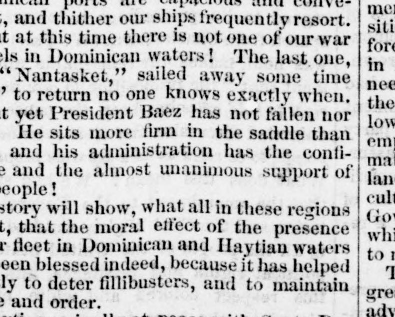
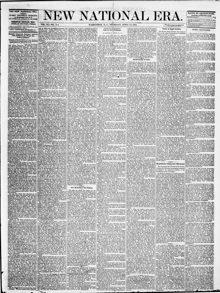

The last one, 'Nantasket," sailed away some time to return noEl último, «Nantasket», zarpó hace algún tiempo para no regresar jamás
New National Era. Washington, D.C., April 18, 1872. Page 1. Published by Frederick Douglass. A weekly newspaper, 1870–1874.New National Era. Washington, D.C., 18 de abril de 1872. Página 1. Publicado por Frederick Douglass. Periódico semanal, 1870–1874. View the originalVer el original


See the full pageVer la página completaThe New National Era reported that the presence of the United States Navy in Dominican waters had effectively maintained peace and deterred hostile incursions from Haiti without resorting to violence. Although President Báez remained securely in power, he and other Dominican leaders had abandoned hope of American annexation and were seeking European protection out of fear of Haitian conquest.El New National Era informó que la presencia de la armada de los Estados Unidos en aguas dominicanas había preservado eficazmente la paz y disuadido las incursiones hostiles desde Haití sin necesidad de apelar a la violencia. Si bien el presidente Báez continuaba afianzado en el poder, él y otros dirigentes dominicanos habían perdido toda esperanza en la anexión a los Estados Unidos y procuraban el protectorado de naciones europeas por temor a una dominación haitiana.
FULL TEXT:TEXTO COMPLETO:
New National Era April 18, 187218 de abril de 1872
And yet, again: Here at Santo Domingo City other popular ideas, propagated by Congressional speeches, are found to have no basis save in the distempered imaginations of political leaders.Y sin embargo, otra vez: Aquí en la ciudad de Santo Domingo se encuentran otras ideas populares, propagadas por discursos del Congreso, que no tienen fundamento salvo en las imaginaciones enfermas de los jefes políticos.
How often have our people been assured that our Executive was guilty of maintaining a fleet in these waters, at vast expense, without necessity, and "solely to maintain a usurper in power!"¡Cuán a menudo se ha asegurado a nuestro pueblo que nuestro Ejecutivo era culpable de mantener una flota en estas aguas, con vasto gasto, sin necesidad, y «solamente para mantener a un usurpador en el poder!»
How confidently, how earnestly, how frequently have our orators asserted that the Baez administration was kept in power mainly by our naval forces, and that it could not stand a day after their withdrawal!¡Con cuánta confianza, con cuánta seriedad, con cuánta frecuencia han afirmado nuestros oradores que la administración de Báez se mantenía en el poder principalmente por nuestras fuerzas navales, y que no podría mantenerse un día después de su retirada!
How have our orators thundered against this abuse of national power, this degrading service of our navy; and how have weak-kneed Republicans shaken their heads in disapproval of the supposed error and wrong! But what is the truth about it? We must have a squadron in the West Indies. The Dominican ports are capacious and convenient, and thither our ships frequently resort. But at this time there is not one of our war vessels in Dominican waters! The last one, the "Nantasket," sailed away some time ago, to return no one knows exactly when. But yet President Baez has not fallen nor fled! He sits more firm in the saddle than ever, and his administration has the confidence and the almost unanimous support of the people!¡Cómo han tronado nuestros oradores contra este abuso del poder nacional, este degradante servicio de nuestra marina; y cómo los republicanos de rodillas débiles han sacudido sus cabezas en desaprobación del supuesto error y agravio! Pero ¿cuál es la verdad al respecto? Debemos tener una escuadra en las Indias Occidentales. Los puertos dominicanos son espaciosos y convenientes, y hacia allí recurren frecuentemente nuestros buques. ¡Pero en este momento no hay ni uno solo de nuestros buques de guerra en aguas dominicanas! El último, el «Nantasket», zarpó hace algún tiempo, para regresar nadie sabe exactamente cuándo. ¡Pero sin embargo el presidente Báez no ha caído ni ha huido! ¡Está más firme en la silla que nunca, y su administración tiene la confianza y el apoyo casi unánime del pueblo!
History will show, what all in these regions admit, that the moral effect of the presence of our fleet in Dominican and Haytian waters has been blessed indeed, because it has helped greatly to deter fillibusters, and to maintain peace and order.La historia mostrará, lo que todos en estas regiones admiten, que el efecto moral de la presencia de nuestra flota en aguas dominicanas y haitianas ha sido en verdad bendito, porque ha ayudado grandemente a disuadir a los filibusteros, y a mantener la paz y el orden.